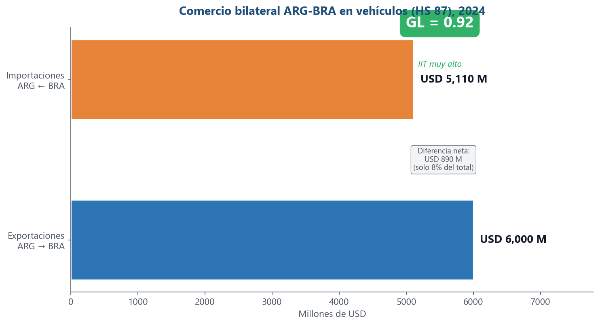
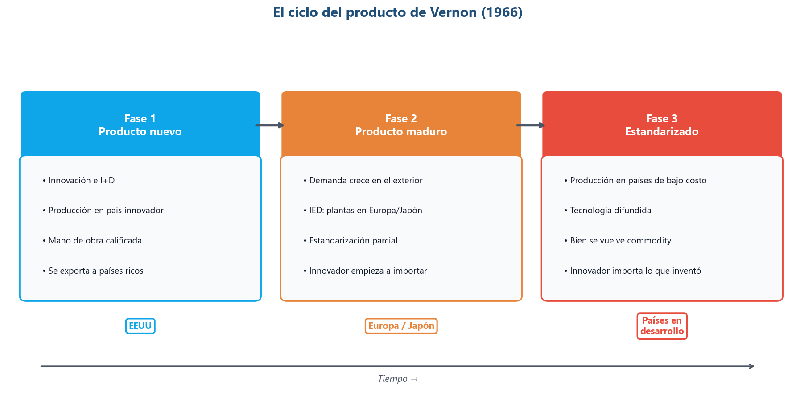
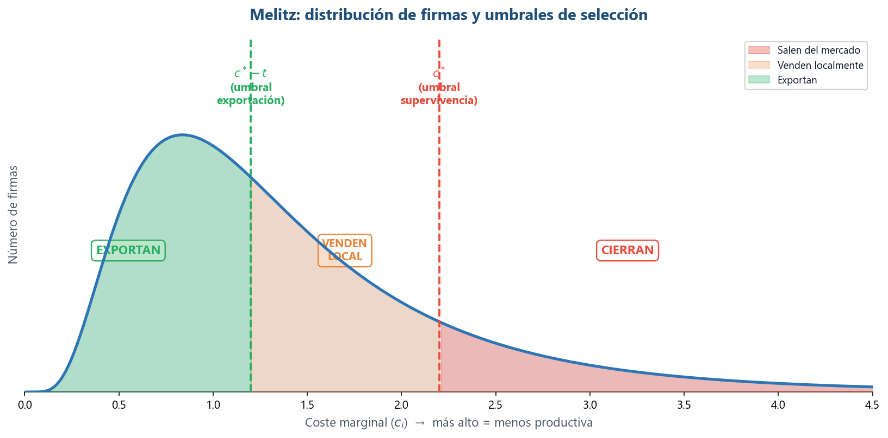
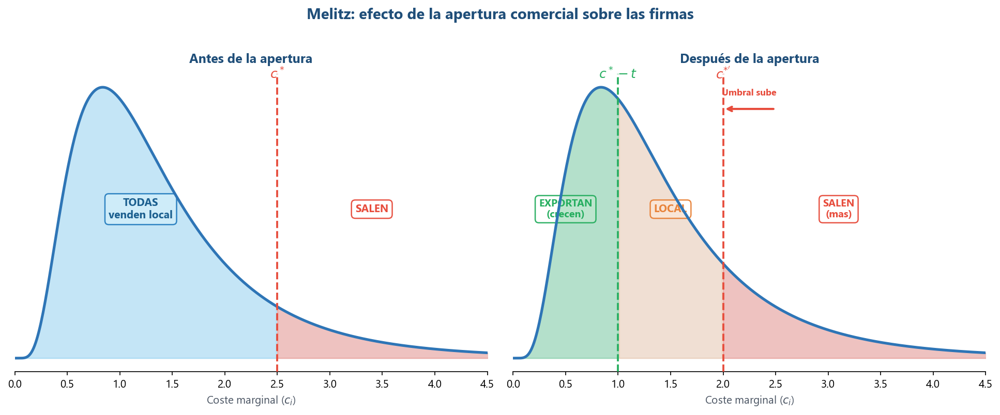
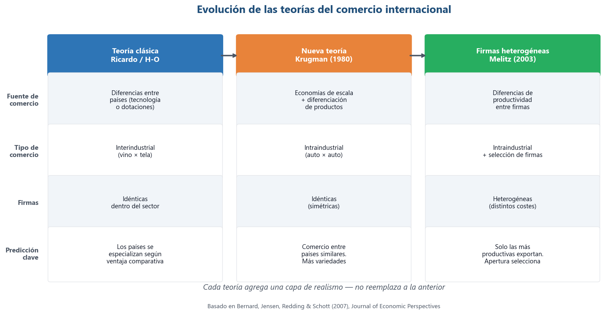
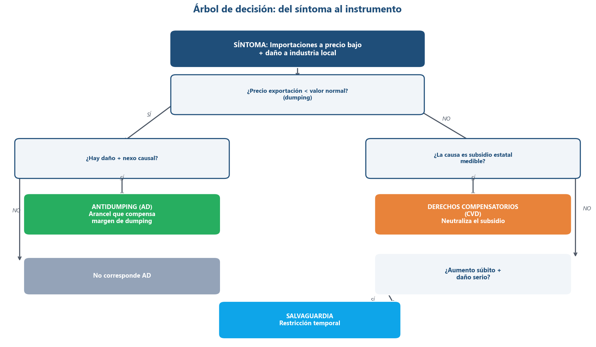
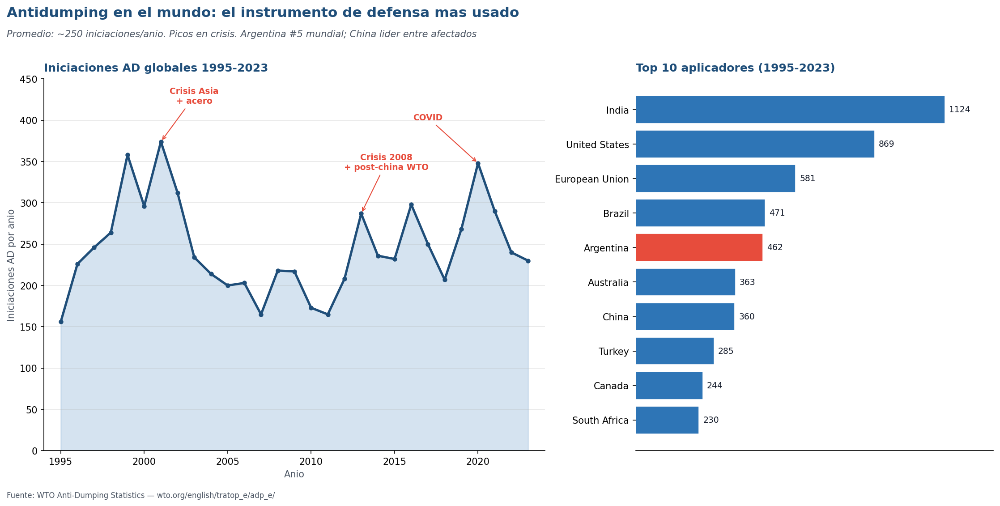
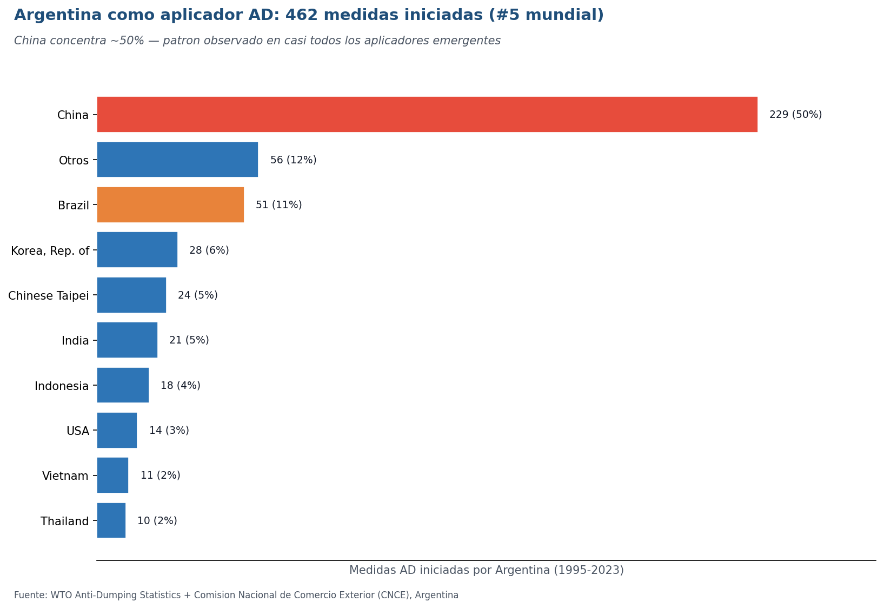
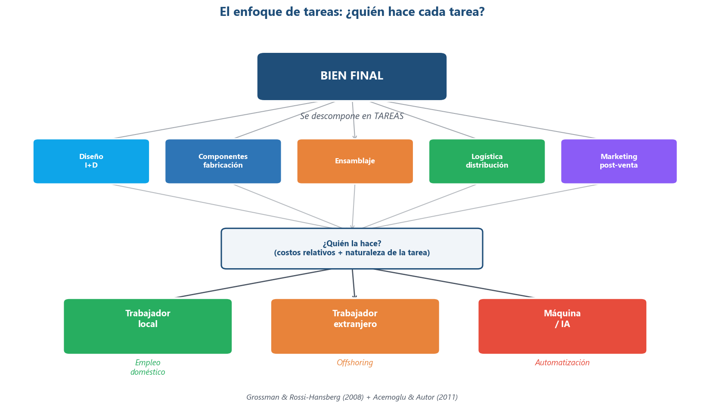

Economía Internacional — Clase 5
¿Quién comercia, cómo y a qué precio?
14 de mayo de 2026
UMET - Licenciatura en Economía | 2026
Lo que sabemos... y lo que falta
Clase 4 nos dio el marco. Hoy lo completamos.
- Lo que sabemos (Clase 4 — Krugman):
- Economías de escala + diferenciación → comercio intraindustrial entre países similares
- El índice GL mide cuánto IIT hay (\(GL = 0\) interindustrial, \(GL = 1\) intraindustrial)
- IIT horizontal (variedades) vs vertical (calidad). NGE y concentración territorial
- Lo que falta — las preguntas de hoy:
- ¿Qué determina que el IIT sea alto o bajo entre dos países?
- ¿Dónde se produce un bien a lo largo de su vida?
- ¿Por qué solo algunas firmas exportan y la mayoría no?
- Cuando una firma exporta más barato de lo que vende en casa... ¿eso es dumping?
Cinco bloques, una historia
- Bloque 1 — ¿Qué determina el IIT?: por qué es alto entre ARG-BRA y bajo entre ARG-Nigeria
- Bloque 2 — ¿Dónde se produce?: Vernon — el producto viaja del innovador al imitador
- Bloque 3 — ¿Quién exporta?: Melitz — no todas las firmas son iguales, solo las mejores exportan
- Recreo
- Bloque 4 — ¿Cuándo es dumping?: precio "demasiado bajo" + defensa comercial (AD, CVD, salvaguardia)
- Bloque 5 — Comercio de tareas: del comercio de bienes a la fragmentación productiva (anticipa U5)
- Cierre: síntesis U3, evaluación, lecturas
Bloque 1 — ¿Qué determina el IIT?
Krugman explica por qué hay IIT, pero no explica cuánto
Determinantes del comercio intraindustrial
¿Por qué el IIT es alto entre algunos países y bajo entre otros?
- Similitud de ingreso per cápita:
- Consumidores con gustos parecidos demandan variedades comparables → más IIT horizontal
- Proximidad geográfica / integración:
- Menores costos de transporte → más comercio de "ida y vuelta" viable
- Tamaño de mercado / escala:
- Mercados grandes permiten más variedades con costos medios más bajos
- Participación de manufacturas:
- IIT es alto en bienes diferenciados, bajo en commodities
- Cadenas de valor / comercio de partes:
- Fragmentación productiva → IIT con rasgos verticales
- Idea fuerza: IIT crece con integración + escala + demanda de variedad
Argentina-Brasil: el IIT más alto de la región

Fuente: OEC / UN Comtrade, HS 87 (Vehículos), 2024
- En el gráfico: dos barras casi iguales — exportaciones (azul, USD 6.000 M) e importaciones (naranja, USD 5.110 M)
- Diferencia neta: solo USD 890 M (8% del total) → GL ≈ 0,92 (callout verde)
- ¿Por qué tan alto? Todos los determinantes operan juntos:
- Proximidad geográfica + integración institucional (PAM/Mercosur)
- Mercado ampliado (45M + 215M = 260M consumidores)
- Cadenas intrafirma (Toyota, VW, Stellantis con plantas en ambos países)
- Tipo de IIT: horizontal (modelos/variedades) + vertical (autopartes de distinta complejidad)
Bloque 2 — ¿Dónde se produce a lo largo de su vida?
Toyota fabrica Hilux en Zárate Y Corolla en San Pablo: ¿por qué se mueve la producción?
Raymond Vernon (1913-1999)
Harvard Business School — Comercio, inversión y multinacionales
- Quién fue: economista estadounidense, profesor en Harvard Business School
- Asesor del Plan Marshall (posguerra) y del Departamento de Estado
- Paper clave: "International Investment and International Trade in the Product Cycle" (1966, QJE)
- Observación central: las multinacionales no solo comercian bienes, también mueven la producción
- Rompió con la tradición: el patrón de comercio cambia con el tiempo, no es estático
- Cita: "La localización de la producción no es un dato fijo: es una función del ciclo de vida del producto"
El producto viaja: innovación → maduración → estandarización

Fuente: Basado en Vernon (1966), adaptación propia
- En el gráfico: tres fases de izquierda a derecha siguiendo el eje del tiempo
- Cada caja indica dónde se produce (abajo) y qué caracteriza la fase (adentro)
- Fase 1 — Producto nuevo (azul, EEUU):
- Requiere I+D, mano de obra calificada, cercanía al mercado. Se exporta a países ricos
- Fase 2 — Producto maduro (naranja, Europa/Japón):
- La demanda crece afuera. Las firmas invierten allá (IED). El innovador empieza a importar
- Fase 3 — Estandarizado (rojo, países en desarrollo):
- Producción migra a países de bajos costos. El bien se vuelve commodity. El innovador importa lo que inventó
Crítica y actualización del modelo de Vernon
Útil pero incompleto
- Lo que sigue vigente:
- La producción se mueve geográficamente con el tiempo
- La conexión entre comercio e IED
- Lo que cambió:
- Ya no hay un único país innovador (China, Corea, India innovan)
- Los ciclos se acortaron dramáticamente (de décadas a años)
- Las CGV fragmentan la producción: un producto puede estar en las 3 fases simultáneamente
- La innovación puede ocurrir en países de "bajos costos" (apps en India, drones en China)
- Lugones: "El esquema no se corresponde con la realidad actual" — pero valora la ruptura con el enfoque estático
- La pregunta que queda: Vernon pensó en productos que viajan. Pero ¿quién decide mover la producción? Las firmas. Y no todas son iguales...
Si el comercio es tan beneficioso... ¿por qué tan pocas firmas exportan?
- El dato: en EEUU, solo el 18% de las empresas manufactureras exporta (2002)
- Las exportadoras son muy diferentes del resto:
- 2 veces más grandes que las no exportadoras
- Producen 11% más de valor añadido por trabajador
- Pagan mejores salarios
- Este patrón se repite en todos los países estudiados (Europa, América Latina, Asia)
- Si el comercio es tan beneficioso... ¿por qué el 82% no participa?
Bloque 3 — ¿Quién exporta y quién no?
Si solo el 18% de las firmas exporta, ¿qué tienen de especial las que sí?
Marc Melitz (1968-)
Harvard — Firmas heterogéneas y comercio internacional
- Quién es: economista franco-estadounidense, nacido en París
- PhD en Michigan, profesor en Harvard desde 2010
- Paper clave: "The Impact of Trade on Intra-Industry Reallocations and Aggregate Industry Productivity" (2003, Econometrica)
- Uno de los papers más citados en economía internacional del siglo XXI
- Dato: coautor del manual de Krugman desde la 9na edición (el que usan en este curso)
- Contribución central: no todas las firmas son iguales → la apertura selecciona
- Las mejores crecen, las peores salen
El mecanismo de selección de Melitz

Fuente: Basado en Melitz (2003) y Krugman Cap 8
- En el gráfico: la curva muestra la distribución de firmas por coste marginal (\(c_i\))
- Eje X: coste marginal (más a la derecha = menos productiva). Dos líneas verticales marcan los umbrales
- Tres zonas de color — tres destinos para firmas del mismo sector:
- Verde (izquierda, \(c_i < c^* - t\)): firmas que exportan — las más productivas
- Naranja (medio, entre los dos umbrales): firmas que venden localmente — sobreviven pero no exportan
- Rojo (derecha, \(c_i > c^*\)): firmas que cierran — no cubren costos fijos
- Clave: exportar tiene un coste adicional \(t\) → solo las firmas con \(c_i + t < c^*\) pueden exportar rentablemente
Apertura = selección: las mejores crecen, las peores salen

Fuente: Basado en Krugman Cap 8, Figura 8.7
- En el gráfico: dos paneles — antes de la apertura (izquierda) y después (derecha)
- Notar cómo el umbral \(c^*\) se mueve a la izquierda → se vuelve más exigente
- Antes: todas las firmas que sobreviven venden localmente. Solo hay una zona (azul)
- Después — aparecen tres zonas (como en el slide anterior):
- Las más productivas ganan cuota y exportan (verde, "Exportan — crecen")
- Las intermedias venden solo local con márgenes más bajos (naranja)
- Más firmas salen del mercado — el umbral subió (rojo expandido, "Salen — más")
- Efecto neto: sube la productividad promedio de la industria (reasignación hacia las mejores)
Cómo evolucionó la teoría del comercio

Fuente: Basado en Bernard, Jensen, Redding & Schott (2007), JEP
- En el gráfico: tres columnas (azul → naranja → verde) con cuatro filas comparativas
- Leer de izquierda a derecha: cada teoría agrega una capa de realismo
- Teoría clásica (Ricardo/H-O):
- Fuente de comercio: diferencias entre países. Firmas: idénticas dentro del sector
- Nueva teoría (Krugman 1980):
- Fuente de comercio: economías de escala + diferenciación. Firmas: idénticas (simétricas)
- Firmas heterogéneas (Melitz 2003):
- Fuente de comercio: diferencias de productividad entre firmas. Firmas: heterogéneas (distintos costes)
- Las teorías no se reemplazan: el comercio real combina los tres mecanismos simultáneamente
Bloque 4 — ¿Cuándo el precio bajo es dumping?
Si el precio externo < interno, ¿es trampa, subsidio o competencia legítima?
Dumping = precio de exportación < "valor normal"
No todo precio bajo es dumping
- Definición: una firma vende en el exterior a un precio inferior al "valor normal"
- ¿Qué es "valor normal"?
- Precio en el mercado interno del exportador
- Precio a terceros mercados (referencia alternativa)
- Costo de producción + margen razonable
- No confundir dumping con:
- Menores costos / mayor productividad
- Tipo de cambio depreciado
- Rebajas puntuales o liquidación de stock
- Diferencias de calidad
- Frase clave: Precio bajo puede ser competitividad. Dumping es discriminación de precios entre mercados, sostenida por segmentación y poder de mercado
La tríada del dumping
Tres condiciones necesarias — todas conectan con lo que ya vimos
- 1. Poder de mercado:
- La firma puede fijar precios (competencia imperfecta)
- En competencia perfecta, \(P = CMg\) y no hay margen para discriminar
- 2. Mercados segmentados:
- No hay arbitraje fácil entre mercados
- Fuentes: costos de transporte, regulaciones sanitarias/técnicas, aranceles, distribución exclusiva
- 3. Elasticidades distintas:
- La demanda responde diferente en cada mercado
- La firma cobra más donde la demanda es inelástica (mercado interno) y menos donde es elástica (exportación)
- Si falta alguna de las tres → no hay dumping sostenible
El dumping como resultado "natural"
Krugman Cap 8: cuando el dumping surge del modelo
- En el modelo de Melitz, una firma exportadora fija:
- Precio doméstico: \(P^D_1 = c_1 + \text{margen}\)
- Precio de exportación: \(P^X_1 = (c_1 + t)\) — menor al doméstico
- Como \(P^X < P^D\) → esto es dumping por definición
- Pero: surge naturalmente de la estructura de mercado
- La empresa no se comporta distinto de sus competidoras locales en el destino
- Es el resultado lógico de competencia monopolística + costes del comercio
- Implicancia: buena parte del dumping es un artefacto del modelo, no conducta predatoria
- ¿Tiene sentido penalizar una conducta que surge naturalmente del modelo?
Mismo síntoma, causas distintas
El mecanismo importa para la respuesta de política
- 1. Predatorio (empresa):
- Entra muy barato → expulsa competidores → luego sube precio
- El más nocivo, pero el más difícil de probar
- 2. Persistente / discriminación (empresa):
- Precios distintos de forma estable por segmentación + elasticidades
- "Natural" en competencia monopolística
- 3. Cíclico / exceso de capacidad (industria):
- Exporta barato para sostener producción en períodos de recesión. Temporal
- 4. Apoyo estatal (Estado + empresa):
- Precio bajo por subsidios, crédito dirigido, energía subsidiada, TC administrado
- Caso China. Jurídicamente: muchas veces es "subsidio" → herramienta distinta (CVD)
- Mismo síntoma (precio bajo), causas distintas → respuestas de política distintas
Efectos económicos: corto plazo vs largo plazo
El dilema de política
- Corto plazo:
- Consumidores del país importador: ganan (precio baja, más variedad)
- Productores locales: pierden (caen ventas y márgenes)
- Largo plazo (riesgos):
- Salida de productores → pérdida de capacidad productiva (difícil de recuperar)
- Empleo: caída directa + efectos en cadena (proveedores, servicios, logística)
- Si hay predación: menor competencia futura → posible suba de precios
- El dilema: proteger productores/empleo vs sostener precios bajos para consumidores
- La respuesta depende del mecanismo (predatorio vs persistente vs cíclico)
¿Qué puede hacer el Estado?
El instrumento depende del diagnóstico
- Antidumping (AD):
- Se aplica cuando se prueba: dumping + daño + nexo causal
- Instrumento: arancel adicional que compensa el margen de dumping
- Derechos compensatorios (CVD):
- Se aplica cuando el problema es subsidio del país exportador
- Instrumento: arancel que neutraliza el beneficio del subsidio
- Salvaguardias:
- Ante aumento súbito de importaciones que causa daño serio
- No requiere probar dumping ni subsidio. Instrumento: restricción/recargo temporal
- Clave: mecanismo distinto → herramienta distinta
¿Qué instrumento usar?

Fuente: Elaboración propia
- En el gráfico: árbol de decisión que empieza por el síntoma (caja azul oscura, arriba)
- Las flechas Sí/No conducen a distintas ramas y desenlaces
- Rama izquierda (hay dumping):
- ¿Precio exportación < valor normal? → Sí → ¿Hay daño + nexo causal?
- Sí: Antidumping (caja verde) / No: no corresponde
- Rama derecha (no hay dumping pero hay problema):
- ¿La causa es subsidio estatal? → Sí: CVD (caja naranja)
- ¿Aumento súbito + daño serio? → Sí: Salvaguardia (caja celeste)
- Idea fuerza: primero diagnóstico, después instrumento
Mini caso: Sector X del país A (datos estilizados)
Diagnóstico con el árbol de decisión
- Importaciones: +60% (en volumen, 2023-2024)
- Precio importado: -25%
- Participación importada en mercado interno: 15% → 35%
- Producción local: -20%
- Utilización de capacidad: 75% → 55%
- Empleo sectorial: -10%
- Rentabilidad: cae fuerte, pasa a negativa
- Preguntas: (1) ¿Hay daño? (2) ¿Hay indicios de nexo causal? (3) ¿Qué información falta para elegir AD, CVD o salvaguardia?
El antidumping en cifras: ~250 medidas/año, picos en crisis

Fuente: WTO Anti-Dumping Statistics (https://www.wto.org/english/tratop_e/adp_e/adp_stattab_e.htm)
- Volumen total: ~250 iniciaciones/año en promedio mundial
- Picos: crisis asiática (2001), post-China en OMC (2013), COVID (2020 — record de 348)
- Top 5 aplicadores: India, EEUU, UE, Brasil, Argentina (5° mundial — sorprende para una economía chica)
- Top 5 afectados: China (1714, lejos), Corea, Taiwán, EEUU, Japón
- Patrón: el antidumping no es un fenómeno "raro" — es el instrumento de defensa comercial más usado del sistema multilateral
- Datos completos en `notebooks/datos/wto_antidumping_*.csv` (para analizar en notebook)
Argentina aplica casi 1 medida cada 3 semanas (acumulado 1995-2023)

Fuente: WTO Anti-Dumping Statistics + CNCE (Comisión Nacional de Comercio Exterior, Argentina)
- 462 medidas iniciadas desde 1995 — quinta posición mundial
- China concentra el 50% de las medidas argentinas (229 casos)
- Brasil segundo lugar pero lejos (51, 11%) — paradoja: socio Mercosur que también nos demanda con AD
- Otros principales: Corea, Taiwán, India, Indonesia (~15 países representan el 90%)
- Sectores típicos (informes CNCE): acero, productos químicos, plásticos, textiles, bicicletas, electrodomésticos
- Las medidas vigentes detalladas en informe anual de la CNCE (las veremos en S10/Política Comercial)
Bloque 5 — ¿Y si no se mueven los bienes, sino las tareas?
Las firmas no mueven la fábrica entera — fragmentan la producción
Trading Tasks — El comercio de tareas
Grossman & Rossi-Hansberg (2008), AER
- De Melitz a Grossman & Rossi-Hansberg:
- Melitz: la firma decide si exportar → basado en productividad vs costes del comercio
- G&RH: la firma decide qué tareas hacer internamente y cuáles enviar al exterior (offshoring)
- Cambio de perspectiva: no se comercian bienes finales, se comercian tareas
- Diseño, ensamblaje, logística, atención al cliente, contabilidad...
- ¿Qué tareas se offshoreean?
- Las rutinarias y codificables → más fáciles de enviar al exterior
- Las que requieren interacción, creatividad o presencia física → tienden a quedarse
- Determinantes: costos de comunicación/coordinación + naturaleza de la tarea
El enfoque de tareas — Una nueva forma de pensar

Fuente: Basado en Grossman & Rossi-Hansberg (2008) y Acemoglu & Autor (2011)
- En el gráfico: tres niveles de arriba a abajo
- Arriba: el bien final (caja azul oscura)
- Medio: se descompone en 5 tareas (diseño, componentes, ensamblaje, logística, marketing)
- Abajo: para cada tarea, tres opciones → trabajador local / trabajador extranjero / máquina-IA
- ¿Qué determina la asignación?
- Costos relativos + costos de coordinación + naturaleza de la tarea
- Acemoglu & Autor (2011): este enfoque unifica comercio + cambio tecnológico + mercado de trabajo
- Anticipos para Unidades 5 y 7: CGV, outsourcing, automatización, IA
- La tarea es la unidad de análisis del siglo XXI
De los países a las firmas, de los bienes a las tareas
El recorrido de la Unidad 3
- Clase 4 (Krugman): economías de escala + diferenciación → IIT. GL, IIT H/V, NGE
- Clase 5 — cuatro preguntas encadenadas:
- ¿Qué lo determina? → similitud, proximidad, escala, integración. Caso ARG-BRA
- ¿Dónde se produce? → Vernon: el producto viaja del innovador al imitador
- ¿Quién exporta? → Melitz: solo las mejores firmas, selección darwiniana
- ¿A qué precio? → Dumping como resultado natural de la competencia monopolística
- ¿Qué se comercia? → No bienes: tareas (Grossman & Rossi-Hansberg, Acemoglu & Autor)
- Hilo conductor: de un mundo de países y sectores (Ricardo, H-O) a un mundo de firmas y tareas
Evaluación Unidad 3
Se abre hoy, deadline miércoles 28 de mayo (2 semanas)
- 5 preguntas multiple choice + reflexión final, integradas en un notebook Jupyter
- Parte 1: 3 preguntas conceptuales (Krugman, Melitz, dumping)
- Parte 2: 2 preguntas con procesamiento de datos reales (WTO antidumping + comercio bilateral ARG-BRA → cálculo GL por sector)
- Reflexión final: diagnóstico teórico del caso argentino (5-10 líneas)
- Archivo: `notebooks/Eval_U3_Krugman_Melitz_Dumping.ipynb`
- Datos en `notebooks/datos/`: WTO Anti-Dumping + UN Comtrade ARG-BRA bilateral por capítulo HS
- Bonus quiz AhaSlides de hoy: hasta +1 punto si participaron + acertaron ≥ 70%
Material complementario
Para profundizar
- 🎬 DW Documental — "Made in China: el ascenso de un gigante industrial" (42 min, español) — ciclo del producto en acción
- 📺 MRU (Marginal Revolution University) — "Why Do Some Firms Export?" (8 min, inglés) — modelo de Melitz simplificado
- 📺 Khan Academy — "Dumping and Anti-dumping Duties" (12 min, inglés) — definición y ejemplos
- 🎬 Netflix — "American Factory" (110 min) — firma china Fuyao en EEUU, choque de culturas productivas, IED y offshoring
- 📺 TED-Ed — "What is the Product Life Cycle?" (5 min, inglés) — ciclo del producto animado
- 🎬 DW Documental — "Juego sin límites: La mentira del libre comercio" (42 min, español) — dumping, subsidios y defensa comercial
Lecturas — Unidad 3
Obligatorias y complementarias
- Obligatorias:
- Lugones, G. et al. — Teorías del Comercio Internacional, Cap. 2.1 (pp. 31-40): rendimientos crecientes y competencia imperfecta
- Krugman, Obstfeld & Melitz (9a ed.) — Caps. 7 y 8: economías de escala, competencia monopolística, firmas heterogéneas, dumping
- Lucángeli, J. (2007) — "La especialización intraindustrial en el MERCOSUR", CEPAL
- Bernard, Jensen, Redding & Schott (2007) — "Firms in International Trade", JEP
- Complementarias:
- Steinberg, F. (2004) — La nueva teoría del comercio internacional y la política comercial estratégica
- Durán Lima & Álvarez (2008) — "Indicadores de comercio exterior y política comercial", CEPAL
Guía de lectura — Unidad 3
Preguntas orientadoras para la bibliografía
- ¿Por qué el modelo de Krugman predice comercio entre países similares y no solo entre diferentes?
- ¿Qué mide el índice de Grubel-Lloyd y cómo se interpreta un GL cercano a 0 vs cercano a 1?
- ¿Cuál es la diferencia entre IIT horizontal (variedades) e IIT vertical (calidad)?
- Según Melitz, ¿por qué solo una minoría de firmas exporta? ¿Qué las distingue?
- ¿Qué predice el modelo de Melitz sobre los efectos de la apertura en la productividad de la industria?
- ¿Cuál es la diferencia entre dumping, subsidio y competencia legítima por costos?
- ¿Qué tres condiciones necesita el dumping para existir?
- ¿Cómo conecta el enfoque de comercio de tareas (Grossman & Rossi-Hansberg) con las cadenas globales de valor?
Próxima clase: Unidad 4 — Prebisch y el estructuralismo
Clase 6, jueves 21 de mayo
- Cambiamos de perspectiva: de las "nuevas teorías" al enfoque estructuralista latinoamericano
- Prebisch: la tesis del deterioro de los términos de intercambio
- Centro-periferia: ¿por qué el comercio puede ser desigual?
- CEPAL e industrialización por sustitución de importaciones (ISI)
- Pregunta guía: ¿Quién gana y quién pierde con el comercio internacional?
- Lecturas: Lugones caps 2.2-2.3, Prebisch (1950), Diamand (1972)
¿Preguntas?
Economía Internacional | Clase 5